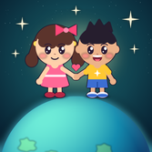

Life SimulatorNeed help, found a bug, or have an idea? We'd love to hear from you.Yardıma mı ihtiyacın var, bir hata mı buldun ya da bir fikrin mi var? Bize yazabilirsin.
You are born in a random country, weighted by real population statistics. Your choices, relationships, careers and luck shape your life until the end.Gerçek nüfus istatistiklerine göre rastgele bir ülkede doğarsın. Seçimlerin, ilişkilerin, mesleğin ve şansın hayatını sonuna kadar şekillendirir.
At the end of a life, open the Life Summary screen and tap "Save as image" or "Share image". Saving needs permission to add photos to your library.Hayat bittiğinde Hayat Özeti ekranında "Görsel olarak kaydet" veya "Görseli paylaş" düğmesine dokun. Kaydetmek için galeriye fotoğraf ekleme izni gerekir.
Achievements are stored only on your device. Deleting the app or resetting the device removes them, and they cannot be restored.Başarımlar yalnızca cihazında saklanır. Uygulamayı silmek veya cihazı sıfırlamak onları siler ve geri getirilemez.
No. The game runs fully offline.Hayır, oyun tamamen çevrimdışı çalışır.
Use the Türkçe / English switch on the home screen.Ana ekrandaki Türkçe / English anahtarını kullan.
Please include your device model, iOS version and a short description (a screenshot helps).mailto:enesboz446@gmail.com